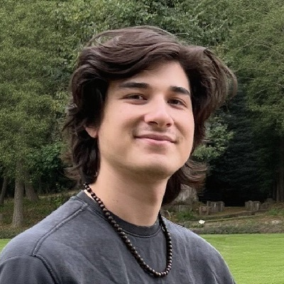

About me
Here is a short excerpt from my CV:
My full resume can be found here.
In November 2025, I began my PhD in Mathematics at the Department of Mathematics at the
University of Salerno under the supervision of Luca Vitagliano.
My research interests include, but are not limited to, G-structures, Lie groupoids,
differentiable stacks, and relations to Riemannian, symplectic and Poisson geometry.
Additionally, I am interested in applications of differential geometric structures in
mathematical physics.
Education
- M.Sc. in Mathematics (specialization: Mathematical Physics) Sep. 2023 – Aug. 2025
at Radboud University Nijmegen (Netherlands).
Thesis: Fibred Lie groupoids and multiplicative connections, supervised by Ioan Mărcuț. - B.Sc. in Mathematics Sep. 2019 – Jun. 2023
at Radboud University Nijmegen (Netherlands).
Thesis: Symplectic geometry: Darboux's theorem and Hamiltonian systems, supervised by Ioan Mărcuț. - B.Sc. in Physics & AstronomySep. 2019 – Jun.
2023
at Radboud University Nijmegen (Netherlands).
Thesis: Symplectic geometry: Darboux's theorem and Hamiltonian systems, supervised by Ioan Mărcuț.
Research
Publications
Preprints
- M. Lau, I. Mărcuţ, Multiplicative Ehresmann connections for Lie groupoid fibrations, arXiv:2604.22394.
Talks
- Multiplicative Ehresmann connections for Lie groupoid fibrations; Methods of Noncommutative Topology and Geometry Seminar, University of Warsaw (Poland) (Online), Apr. 10, 2026
- Multiplicative Ehresmann connections; Bari-Salerno Differential Geometry Days, Univ. degli Studi di Salerno (Italy), Feb. 11, 2026
- Lie groupoids; Holonomy and Monodromy of foliations; Seminar: Non-commutative geometry of foliations, RU Nijmegen (Netherlands), Mar. 20, 2025
Posters
- Multiplicative Ehresmann connections for Lie groupoid fibrations; Poisson 2026 Summer School and Conference, Univ. of Antwerpen and KU Leuven (Belgium), Aug. 3 and 13, 2026.
- Completeness of multiplicative Ehresmann connections on fibred Lie groupoids; Interactions of Poisson Geometry, Lie Theory and Symmetry, IST Lisbon (Portugal), Jul. 2, 2025.
Conferences, Workshops and Schools
Upcoming
2026
- No upcoming events planned...
Past
2026
- Poisson 2026, KU Leuven (Belgium)Aug. 10–14
- Poisson Geometry Summer School, Univ. of Antwerp (Belgium)Aug. 3–7
- Higher Structures in Pavia, Univ. di Pavia (Italy)Jun. 17–19
- Higher Geometric Structures along the Lower Rhine, UU Utrecht (Netherlands)Apr. 16–17
- Bari-Salerno Differential Geometry Days, Univ. degli Studi di Salerno (Italy)Feb. 9–11
2025
- Around Singularities in Poisson Geometry, IASM Hangzhou (China) (attended online)Aug. 3–8
- Interactions of Poisson Geometry, Lie Theory and Symmetry, IST Lisbon (Portugal)Jun. 30 - Jul. 4
- Seminar: Non-commutative geometry of foliations, RU NijmegenFeb. 1 - Jul. 31
- Higher Geometric Structures along the Lower Rhine XVIII, RU Nijmegen (Netherlands)Jan. 23–24
- Central Europe Relativity Seminar 15, RU Nijmegen (Netherlands)Jan. 22–23
2024
- Poisson aan de Waal 4, RU Nijmegen and UU Utrecht (Netherlands)Jun. 27–28
Teaching
At Radboud University Nijmegen (Netherlands)
As a bachelor's and master's student, I gave tutorials and problem sessions
for the following courses:
2024/2025
- Multivariable analysis, Fall
- Group theory, Spring
2023/2024
- The theory of special relativity (Dept. of Phys.), Fall
- Programming 1, Fall
- Complex Functions (Dept. of Phys.), Spring
- Probability theory, Spring
2022/2023
- Linear Algebra A, Fall
- Introduction to Mathematics, Fall
- Complex Functions (Dept. of Phys.), Spring
- Calculus B, Spring
- Group theory, Spring
2021/2022
- Programming 2 (Dept. of Phys.), Fall
- Linear Algebra A, Fall
- Calculus B, Spring
2020/2021
- Calculus B, Spring